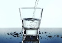
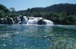
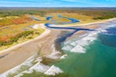
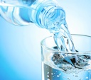
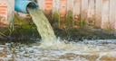
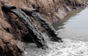
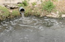
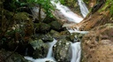

La Importancia del Agua
Cuando hablamos del cuidado del agua, nos referimos al uso racional del agua. Esto implica velar por la protección de las fuentes de agua limpia y consumible en nuestro planeta, procurando no contaminarla, no malbaratarla y así preservar este líquido vital no sólo para nuestra especie, sino para la vida entera en el planeta Tierra.
Carencia Mundial y Nacional
| Tipos de Agua | ||
|---|---|---|
| Nombre | Descripción | Imagen |
| Potable | Aquella destinada para el consumo humano. |  |
| Dulce | Se encuentra en la superficie terrestre de manera natural, así como en ecosistemas subterráneos. |  |
| Salada | Posee una concentración de sales minerales disueltas de cerca del 35%. Se encuentra en océanos y mares. | |
| Salobre | Tiene más sales disueltas que la dulce, pero menos que la salada. |  |
| Dura | Aquella que contiene un alto nivel de minerales disueltos. |  |
| Blanda | En ella se encuentra disuelta una mínima cantidad de sales. |  |
| Destilada | Cuando ha sido purificada o limpiada mediante destilación. | |
| Residuales | Cualquier tipo de agua cuya calidad está afectada negativamente por la influencia del ser humano. |  |
| Negras | Contaminadas con heces u orina. |  |
| Grises | También conocida como agua usada, es aquella que proviene del uso doméstico. |  |
| Cruda o Bruta | No ha recibido ningún tratamiento y suele encontrarse en fuentes y reservas naturales. |  |